森ではじまる、
家族のものがたり。
盛岡市都南にある自然体験型の公園「つどいの森」。キャンプ、テニス、グラウンドゴルフ、バーベキュー、木工体験——お花見の春から紅葉の秋まで、四季をまるごと遊びつくせます。
キャンプ場の営業期間は4月〜11月です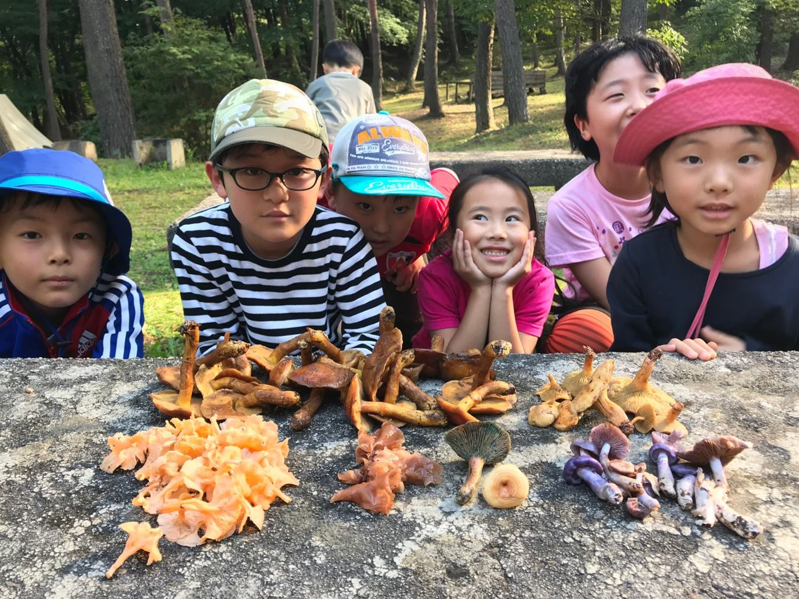
つどいの森からのお知らせ
10月4日(日)「熱水変質帯のナメ沢登りで行く箱ヶ森」を開催しました
矢櫃川滝ノ沢をキノコを採りながら沢登りして箱ヶ森へ。当日の写真集とGPSログを公開しています。ルート図・3D動画つきの詳細はこちら
ホームページリニューアル試験運用中
現在試験運用中です。不具合を確かめた後、2026年10月中にリニューアルサイトとして新たに刷新した内容で運用を開始します。
グラウンドゴルフ大会、次回は10月15日(木)
11月5日(木)につどりんピックを開催し、令和8年度の開催を終了します。なお、つどりんピックはどなたでも参加できる大会です。
あかばやし探検隊は次回10月25日(日)開催
10月のあかばやし探検隊は恒例のサバイバルクッキング大会。肉を焼いて、焼け石で浜鍋、ベーコン作って、リンゴピザをやります。他にも竹筒パンや竹筒ご飯なども（メニュー追加あり）。
釣り堀 営業中（土日祝限定）
11月8日まで、土曜・日曜・祝日限定で営業中。営業時間は12時過ぎ〜15時ごろ。天候により変更となる場合があります。
つどいの森であそぶ、3つのステップ
あそびを決める
キャンプ、BBQ、日帰り、体験学習…施設案内から、やってみたいことを探しましょう。
予約する
多くの施設は3日前まで（BBQハウスは5日前まで）にお電話または直接ご来園でご予約ください。
森へ来園
受付は管理棟にて。当日は季節に合わせた服装・持ち物でお越しください。
四季の楽しみ方
キャンプ場や球技施設は4月〜11月のご利用が中心です。季節ごとの見どころをチェックしてお出かけください。
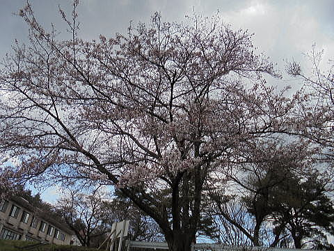
春｜園内の桜
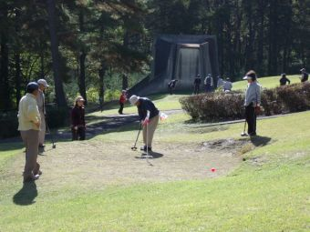
夏｜グラウンドゴルフコース
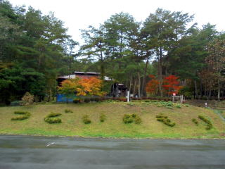
秋｜紅葉の頃の園内
キャンプからスポーツまで
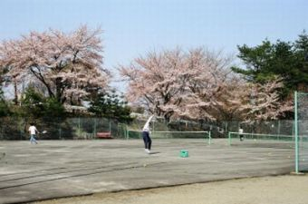
テニスコート
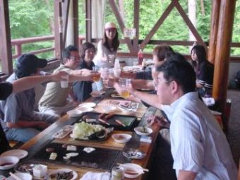
バーベキューハウス
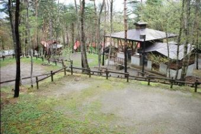
オートキャンプサイト
自然のふしぎ、人の営みをたどるコラム
葉っぱの小さな穴にも、川原の石ころにも、昔から伝わる遊びにも、知らなかった世界への入口があります。森で遊び、気づき、調べ、考える。そんな好奇心から生まれた、一話完結の読みものです。
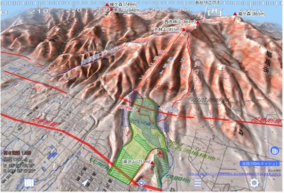
つどいの森は、なぜ平らなのか
山のふもとなのに、ここだけ平ら。その答えは数千年前の地すべりにありました。
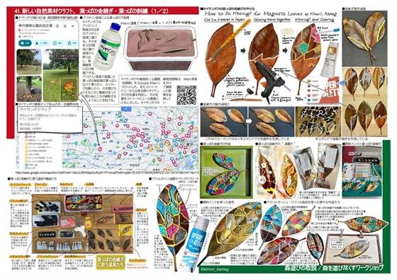
葉っぱの金継ぎ
タイサンボクの落ち葉を継いで彩る新しい自然素材クラフト。下処理から仕上げのコツまで紹介します。
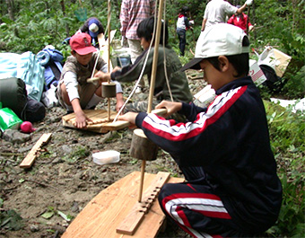
火おこし作業中！
あかばやし探検隊の一コマ。マッチを使わず、道具と工夫で火をおこす体験です。
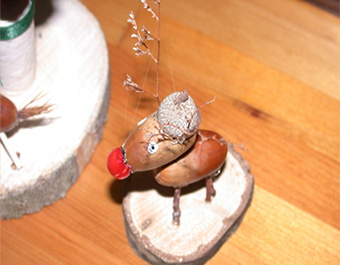
どんぐりで作る、森の工作
拾ったどんぐりや木の実を組み合わせて、動物や置物を作る工作の様子です。